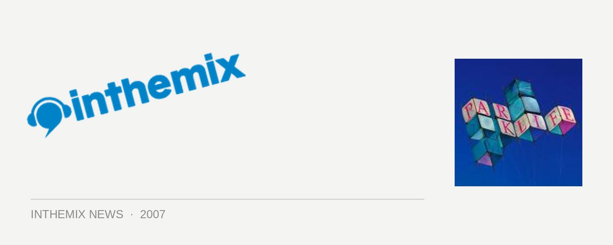

Get yer Parklife set times!
It’s easily gotta be one of the big-ticket events on the Sydney dance music calendar: 35,000 eager punters will be clocking in for next weekend’s Parklife festival, and now you can see which acts will be playing and when!
In other Parklife news, national broadcaster Triple J has chosen the winners of its Unearthed competition, where five talented acts are getting the chance to take to the stage in their respective states to perform in front of thousands of punters. Gameboy/Gamegirl will be playing Victoria, The Levitators are representing South Australia, Twist Oliver, Twist! have been chosen for Queensland while Sydney’s Kobra Kai will be taking to the stage in Centennial Park.
Check the Parklife set times and venue map below!
Air Stage
12.00: Meem DJ Set
1.00: Funktrust DJs
2.00: Stereo MCs DJ Set
3.30: Scratch Perverts
5.00: The Herd (Live)
6.00: Freq Nasty Soundsystem feat. Shaun Barry & Afrobots
7.30: Lyrics Born (Live)
8.45 M.I.A. (Live)
Fire Stage
12.00: JJJ Unearthed Winner
1.00: Kato
2:00: Stick Figures (Live)
2.45: Jaime Doom & Gus Da Hoodratt
3.45: Muscles Live
4.30: Purple Sneakers DJs
5.15: The Sounds Live
6.15: Craze
7.15: Adam Freeland
8.45: Shapeshifter (live)
Water Stage
12:00: Ember
1.00: Jonathan Wall
1.50: Cajuan
2.50: K.I.M.
3.50: Ajax
4.50: Goose Live
5.30: Mstrkrft
7.00: Digitalism Live
7.50: Busy P
8.45: Justice (live)
Earth Stage
12.00: John Devecchis
1.00: Goodwill
2.00: Lamanex
3.30: Greenskeepers (live)
4.30: Riot In Belgium (live)
5.30: Yelle (live)
6.30: Derrick Carter
8.30: DJ Delicious